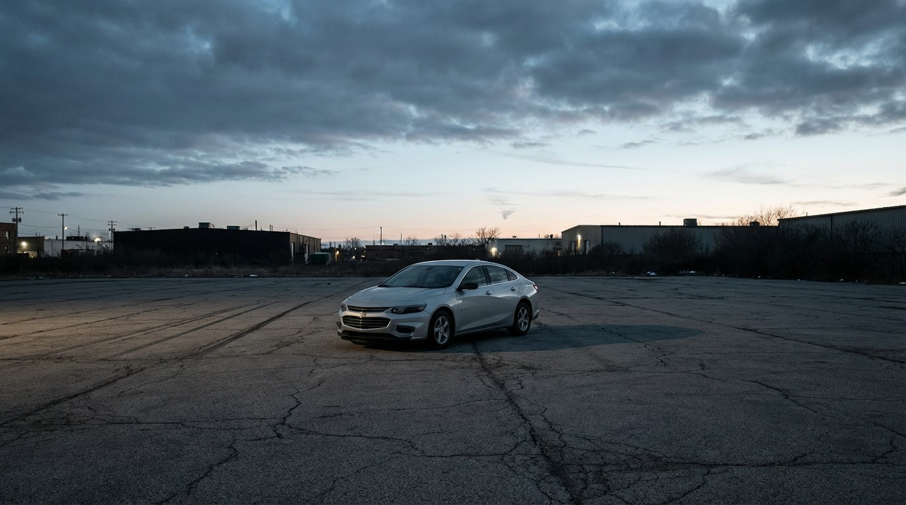

The Chevy Malibu Has Killed 3,465 People. Nobody Noticed.

Here's a fun fact that will ruin your morning commute. The Chevrolet Malibu has a per-mile fatality rate of 2.03 deaths per 100 million vehicle miles traveled — the exact same number as the Toyota Camry. But while we've written extensively about the Camry paradox, nobody writes about the Malibu. Nobody writes about the Malibu because nobody thinks about the Malibu. It is the vehicular equivalent of beige wallpaper.
Consider the numbers: a fleet of 1.49 million Malibus generating 17.1 billion vehicle miles traveled per year, producing 346 deaths annually like clockwork. The Malibu sits in the dead center of the midsize sedan class — not the worst, not the best, just quietly lethal in a way that never makes the news.
What makes the Malibu interesting isn't what it does. It's what it doesn't do. The Ford Fusion, competing in the exact same segment at the exact same price, managed a rate of just 1.23 — 40% safer per mile. The Hyundai Sonata sits at 1.56. Even the Elantra, a class below, comes in at 1.50. The Malibu isn't just average — it's the worst-performing midsize sedan from a non-Nissan manufacturer.
The impairment data adds texture without explaining anything. At 20.7%, Malibu drivers show a perfectly average rate of alcohol and drug involvement in fatal crashes. These aren't drunk drivers, party animals, or boy racers. These are people commuting to work, picking up groceries, driving kids to practice. The Malibu kills the way a Tuesday kills — slowly, unremarkably, without anyone stopping to wonder why.
GM discontinued the Malibu in 2024 after nine generations spanning 60 years, replacing it with the electric Equinox EV. The final model year earned Top Safety Pick from IIHS, five stars from NHTSA. On paper, a perfectly safe car. In practice, 3,465 people are dead. The Malibu's legacy isn't danger — it's invisibility. In a world where Mustangs and Chargers grab the headlines with their spectacular fatality rates, the Malibu proves that the most dangerous thing a car can be is forgettable.
The Camry kills 632 people a year and gets an article. The Malibu kills 346 and gets silence. Both have the same rate. The only difference is that people care about the Camry.